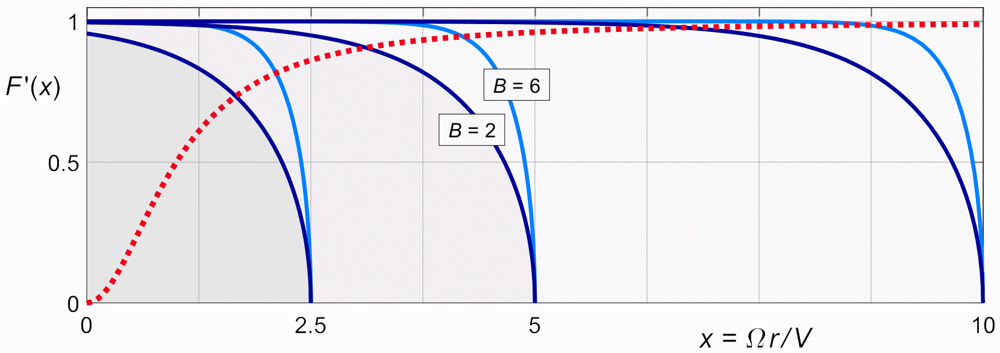
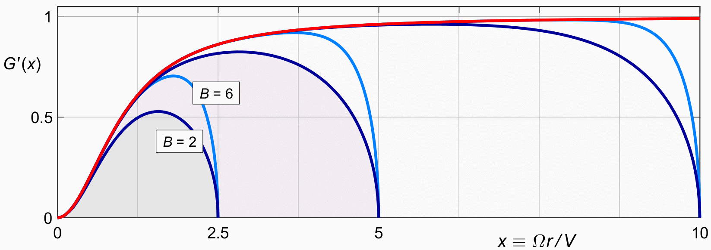

TIP LOSS
So far we looked at Prandtl's approximation of the isolated mass flow factor K (x), as defined in (17.2).
We will now look at the combined thrust reduction factor
G (x).
With
Prandtl's
approximation F (x)
for K (x),
| (20.1) |
First we look at the two terms of this equation separately.
Figure 20.1 shows F ′ (x) at a different scale than either figure 19.6 or figure 19.7. Those figures were at the scale of B . X which is natural to Prandtl's tip function, and at the scale of R which is natural for a propeller of fixed diameter. The new figure shows F ′ (x) on the x scale, which is the natural scale for cos 2 φ. Drawn on this scale, cos 2 φ is identical for all propellers. It is shown in the figure as a red dotted line.
The blades have a tip radius of X ( the capital X ), so the blades vary in length with X on the graph. On this scale, Prandtl's tip has the same shape with x only for propellers with the same number of blades.

Figure 20.1 : Prandtl's tip shape and cos2 φ on the x scale.
Figure 20.1 shows that the two reductions partly overlap.
When they combine according to (20.1), both terms will contribute to the reduction at a given radius together. The shape at the tip is mostly determined by the F ′ (x) term, not so much by cos 2 φ, since that factor approaches 1 for large values of x. The shape near the root on the other hand, is mostly determined by the cos 2φ term, since the value of F ′ (x) is nearly 1 near the root.
In the middle of the blade the two reductions may overlap, esoecially for small values of the product B . X. If the overlap is large, then the combined shape factor is strongly reduced along the whole blade.

Figure 20.2 : Prandtl's tip shape combined with cos2 φ.
In (17.9) we defined the overall thrust reduction factor κG, by analogy with the κφ of (11.3).
We can now calculate a Prandtl-approximate version of κG, which we shall call κG′ :
| (20.2) |
There is no simple analytical solution for this integral,
but we have relatively simple equations
for both terms of the integrand (20.1),
so this expression is easily integrated numerically
by as many steps as we like
| (20.3) |